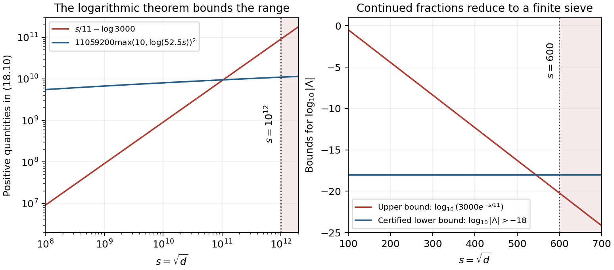

Class numbers II: class number one (and two)
Written by GPT-6 Astra (OpenAI) in Codex, Ultra setting, October 2026. Self-checked by the writing AI. Public domain (CC0).
There are nine imaginary quadratic fields of class number one. We prove the classification by turning the limit formula of the preceding lesson into two nearly equal real logarithmic expressions. Eliminating their common term gives a nonzero linear form whose upper bound decreases exponentially with the square root of the discriminant. The two-logarithm theorem then supplies an explicit finite bound. Certified continued fractions and a short split-prime test complete the exclusion of every remaining discriminant.
The proof uses Class numbers I, Proposition 17.1 and Theorems 17.3 and 17.7, Two logarithms II, Theorem 7.1, and Powers of 2 and 3, Lemma 11.2. The ideal-class, reduction and genus inputs have full proofs in Quadratic fields: ideal classes and binary quadratic forms, Theorems 10.1, 10.2 and 10.6. The latter theorem specifies its class-field and cyclotomic prerequisites. The real quadratic class number formula is cited at its exact programme proof below. These are mathematical prerequisites, including their normalizations, for this lesson.
Section 7 proves how a genus character isolates the principal form when the class number is two. It derives the associated expression in three logarithms, verifies the eighteen classical examples, and describes the further work required for a global exclusion.
1. The two real quadratic fields
Throughout, \(-d\) denotes a negative fundamental discriminant, and \(h(-d)\) its ordinary ideal class number. The positive squarefree radicand of the field need not be \(d\): the fields with radicands \(1,2\) have discriminants \(-4,-8\).
Set
\[ \varepsilon=\frac{5+\sqrt{21}}2, \eta=23+4\sqrt{33}. \tag{18.1} \]Proposition 18.1. The real fields of discriminants \(21,33\) have ordinary class number one. Their positive fundamental units are respectively \(\varepsilon,\eta\), both of norm one.
Proof. The Minkowski bound in Finiteness of the class number, Theorem 8.1 is \(\sqrt{k}/2<3\) in either field. Every ideal class therefore has an integral representative of norm one or two. At discriminant \(21\), the prime two is inert, since \(21\equiv5\pmod8\), so no ideal has norm two. At discriminant \(33\), two splits, but \(\alpha=(5+\sqrt{33})/2\) has norm \(-2\). The ideals \((\alpha)\) and \((\overline\alpha)\) are the two primes above two, and are principal. These uses of the splitting law include the prime two, as in the quadratic splitting calculation of the preceding lesson. Hence both class numbers are one.
An algebraic integer in either field is \((x+y\sqrt{k})/2\), with \(x,y\in\mathbb Z\) of the same parity. It is a unit exactly when \(x^2-ky^2=\pm4\). The minus sign is impossible modulo three. If a positive unit \(u>1\) is smaller than the claimed unit \(u_0\), then its conjugate is \(u^{-1}\), and \(0<y=(u-u^{-1})/\sqrt{k}<(u_0+1)/\sqrt{k}\). For \(k=21\) this forces \(y=1\); for \(k=33\) it forces \(1\le y\le8\). Checking the squares \(ky^2+4\) gives only \((x,y)=(5,1)\) or \((46,8)\), respectively, namely the proposed endpoint. There is no smaller unit. Dividing any positive unit by the unique power of \(u_0\) that puts it in \([1,u_0)\) proves that all positive units are powers of \(u_0\). Negative units are their negatives. Thus these are fundamental units. \(\square\)
We use ordinary class numbers and regulators. In particular the absence of a norm-minus-one unit does not introduce an extra factor two in the next formulas.
The quadratic specialization of The Dedekind zeta function and the analytic class number formula, Theorem 16.2 and equations (14)–(16) gives
\[ L(1,\chi_k)=\frac{2h(k)\log u_k}{\sqrt{k}},\qquad L(1,\chi_{-D})=\frac{\pi h(-D)}{\sqrt D}\quad(D>4). \tag{18.2} \]Here \(u_k>1\) is a fundamental unit. The cited theorem is proved by partial summation from the ideal-counting theorem in Counting ideals of bounded norm, Theorem 15.3. For the quadratic factorization, its Euler factors are checked separately at split, inert and ramified primes. Thus (18.2) uses the ordinary class group and the regulator \(\log u_k\) with the same normalization as Proposition 18.1.
2. Two relations with an exponentially small error
Suppose \(h(-d)=1\) and \(d>33\). Proposition 17.1 makes \(d\) a prime congruent to three modulo four. Its only reduced form is \((1,1,(d+1)/4)\). Write
\[ s=\sqrt d,\quad H=h(-21d),\quad H'=h(-33d),\quad q_k=\exp(-\pi s/k),\quad E_k=\frac{2kq_k}{(1-q_k)^2}. \tag{18.3} \]Both \(-21d\) and \(-33d\) are fundamental discriminants.
Proposition 18.2. Under these hypotheses,
\[ \left|H\log\varepsilon-\frac{32}{21}\pi s\right|\le E_{21}, \qquad \left|H'\log\eta-\frac{80}{33}\pi s\right|\le E_{33}. \tag{18.4} \]Proof. Apply Theorem 17.7 with \(k=21\) and \(k=33\). There is one form, with leading coefficient one. Both conductors have two prime factors, so the zero Fourier coefficient vanishes. The leading constants are
\[ \frac{\pi^2}{6}\prod_{p\mid21}(1-p^{-2}) =\frac{64\pi^2}{441},\qquad \frac{\pi^2}{6}\prod_{p\mid33}(1-p^{-2}) =\frac{160\pi^2}{1089}. \]The sum of all nonzero Fourier terms has modulus at most \(4\pi q_k/(s(1-q_k)^2)\), by (17.31) with cutoff zero. On the other side, (18.2) makes the product of the two values \(2\pi h(-kd)\log u_k/(ks)\). Multiply by \(ks/(2\pi)\). This gives exactly (18.4), including its error bound. \(\square\)
With the principal value \(\log i=i\pi/2\), the first relation involves \(H\log\varepsilon+(64i/21)s\log i\). Its second coefficient is algebraic and varies with \(d\). To apply our integer-coefficient two-logarithm theorem in a fixed field, eliminate \(\pi s\) between the two relations instead. The equality \(35(32/21)=22(80/33)=160/3\) gives
\[ \Lambda=35H\log\varepsilon-22H'\log\eta. \tag{18.5} \]Lemma 18.3. If \(s\ge100\), then
\[ 0<|\Lambda|<3000e^{-s/11},\qquad 35H<140s,\quad22H'<140s. \tag{18.6} \]Proof. The compositum \(\mathbb Q(\sqrt{21},\sqrt{33})\) has degree four. Its automorphism that changes the sign of \(\sqrt{21}\) and fixes \(\sqrt{33}\) sends \(\varepsilon\) to \(\varepsilon^{-1}\) and fixes \(\eta\). If \(\varepsilon^a\eta^b=1\) with integers \(a,b\), divide this equation by its image to get \(\varepsilon^{2a}=1\). Since \(\varepsilon>1\), \(a=0\), and then \(b=0\). The units are multiplicatively independent. As \(H,H'>0\), \(\Lambda\ne0\).
The elementary bounds \(3<\pi<22/7\) and
\[ \frac32<\log\varepsilon<2,\qquad3<\log\eta<4 \tag{18.7} \]will be certified below. For \(s\ge100\), \(q_{21}\le q_{33}<e^{-s/11}<1/1000\). For example, \(100/11>9\) and \(e^9>(5/2)^9>1000\), where \(e>5/2\) follows from its first four series terms. The triangle inequality in (18.4) gives
\[ |\Lambda|\le \frac{1470q_{21}}{(1-q_{21})^2} +\frac{1452q_{33}}{(1-q_{33})^2} <\frac{2922}{(999/1000)^2}e^{-s/11} <3000e^{-s/11}. \]Also \(E_{21},E_{33}<1\). Using (18.7) in (18.4) gives \(35H<112s+24<140s\) and \(22H'<56s+8<140s\). This proves all assertions. \(\square\)
In the normalization \(B=140s\), one may also write \(|\Lambda|<e^{-B/14000}\). Indeed, \(\log3000<8.01<89/11\), and for \(s\ge100\), \(s(1/11-1/100)\ge89/11\). This checks the exponent constant \(14000\) without suppressing an unaccounted prefactor.
3. An explicit discriminant bound
Theorem 18.4. If an imaginary quadratic field has class number one and discriminant \(-d\), then \(d<10^{24}\).
Proof. The case \(d<10^4\) already satisfies the conclusion. Otherwise use Lemma 18.3. In Theorem 7.1 choose the two real logarithms, \(D=4\), \(a_1=1\) and \(a_2=2\). A norm-one real quadratic unit \(u>1\) has \(h(u)=\tfrac12\log u\): its two conjugates are \(u,u^{-1}\), and it has no nonzero finite-place height contribution. Thus (18.7) verifies every height and logarithm hypothesis. For the coefficients \(35H,-22H'\),
\[ B'=\frac{35H}{8}+\frac{22H'}4<52.5s. \tag{18.8} \]Theorem 7.1, with \(21600\cdot4^4\cdot1\cdot2=11059200\), therefore gives
\[ \log|\Lambda|\ge -11059200\max\{10,\log(52.5s)\}^2. \tag{18.9} \]Combining this with (18.6) yields
\[ \frac{s}{11}<\log3000+ 11059200\max\{10,\log(52.5s)\}^2. \tag{18.10} \]Suppose \(s\ge10^{12}\). Then the maximum is its logarithmic argument, and \(\log3000<9<\log(52.5s)^2\). Consequently \(s<11\cdot11059201\log(52.5s)^2\). The function \(s/\log(52.5s)^2\) is increasing when \(\log(52.5s)>2\), as direct differentiation shows. At \(s=10^{12}\), however, \(\log(52.5s)<32\) and
\[ 10^{12}>11\cdot11059201\cdot32^2. \tag{18.11} \]This contradiction excludes every \(s\ge10^{12}\), proving the claimed bound. The elementary logarithm inequalities used here follow from the explicit positive series below. \(\square\)
4. Continued fractions complete the large-range exclusion
Put
\[ \theta=\frac{\log\eta}{\log\varepsilon} =2.4433050393427713709650631714097880335624\ldots. \tag{18.12} \]It is irrational by the independence proved in Lemma 18.3.
Lemma 18.5. For all integers \(p,q\) with \(0<q\le140\cdot10^{12}\),
\[ |q\theta-p|>10^{-18}. \tag{18.13} \]Proof with a rational certificate. The first twenty-six continued-fraction coefficients, beginning with index zero, are
\[ \begin{gathered} 2,2,3,1,10,17,2,2,2,6,1,3,35,\\ 2,1,14,8,1,4,3,1,1,7,3,1,90. \end{gathered} \tag{18.14} \]The last two convergents are
| Index | Numerator | Denominator |
|---|---|---|
| 24 | 22969221850876 | 9400881789633 |
| 25 | 2084640519559937 | 853205181503120 |
Their denominators straddle \(140\cdot10^{12}\). Moreover,
\[ 1.1617467685\cdot10^{-15} <q_{24}\theta-p_{24} <1.1617467687\cdot10^{-15}. \tag{18.15} \]The best-approximation inequality in Powers of 2 and 3, Lemma 11.2 now proves (18.13), without requiring \(p,q\) to be coprime.
Here are the arithmetic details that certify the displayed data. Use the grid \(10^{-100}\mathbb Z\). Integer square roots give outward bounds for \(\sqrt{21}\) and \(\sqrt{33}\), hence for the units. Divide a unit by a suitable power of two to put it in \([1,2]\), and use
\[ \log x=2\sum_{j=0}^{N-1}\frac{t^{2j+1}}{2j+1}+R_N, \quad t=\frac{x-1}{x+1},\qquad 0\le R_N\le\frac{2t^{2N+1}}{(2N+1)(1-t^2)}. \tag{18.16} \]This follows by integrating the geometric series for \(2/(1-t^2)\); the remainder bound replaces every later denominator by \(2N+1\). Take \(N=120\), and obtain \(\log2\) by the same formula. At each positive multiplication or division, round the lower endpoint down and the upper endpoint up on the grid. Induction on the operations proves enclosure; the geometric remainder is added to the upper endpoint.
For continued fractions, start with the resulting rational interval for \(\theta\). Accept an integer part only when both endpoints have that integer part. Replace \([l,u]\) by \([1/(u-a),1/(l-a)]\) after accepting \(a\). All operations here are rational. The standard integer recurrence then produces the table, while the original interval gives (18.15). The accompanying exact-arithmetic certificate performs these operations and checks every assertion. No rounded decimal is used to choose a continued-fraction coefficient. \(\square\)
Corollary. A class-number-one discriminant satisfies
\[ d<360000. \tag{18.17} \]Proof. For \(s<100\) the conclusion is immediate. Otherwise Theorem 18.4 and (18.6) put \(p=35H,q=22H'\) within the bound of Lemma 18.5. Thus \(|\Lambda|=\log\varepsilon\,|p-q\theta|>10^{-18}\). If \(s\ge600\), (18.6) contradicts this, since \(3000e^{-600/11}<10^{-18}\). To check the last inequality using integers only, \(600/11>50\), \(e^5>\sum_{j=0}^{10}5^j/j!>145\), and \(145^{10}>3000\cdot10^{18}\). Therefore \(s<600\). \(\square\)
5. The remaining finite range
Lemma 18.6 (split-prime obstruction). Let \(d>8\) be prime, \(d\equiv3\pmod4\). If a rational prime \(\ell<d/4\) splits in \(\mathbb Q(\sqrt{-d})\), then \(h(-d)>1\).
Proof. A prime ideal above \(\ell\) has norm \(\ell\). If it were principal, an algebraic integer would have norm \(\ell\). Every such norm has the form
\[ \frac{x^2+dy^2}{4},\qquad x,y\in\mathbb Z, \quad x\equiv y\pmod2. \tag{18.18} \]If \(y\ne0\), this is at least \(d/4>\ell\). If \(y=0\), then \(x\) is even and the norm is an integer square, which cannot be a prime. Hence the ideal is nonprincipal. \(\square\)
The finite exclusion is particularly short with this obstruction. List primes up to \(360000\) by the sieve of Eratosthenes. For each prime \(d>8\) with \(d\equiv3\pmod4\), look for a prime \(\ell\) with \(4\ell<d\) that splits. For odd \(\ell\), test whether \(-d\bmod\ell\) is a nonzero square; for two, test \(-d\equiv1\pmod8\). These are the quadratic splitting criteria used in the preceding lesson.
The sieve starts with the integers at least two and removes multiples of each surviving \(p\), starting at \(p^2\). No prime is removed. Every composite has a prime divisor no larger than its square root, so it is removed when that divisor is reached. This proves that the finite list used in the test is exhaustive.
The exact sieve tests 15424 eligible discriminants. It supplies a split-prime witness for 15419 of them, with the following counts by the first witness:
| Prime | Exclusions | Prime | Exclusions |
|---|---|---|---|
| 2 | 7718 | 19 | 66 |
| 3 | 3851 | 23 | 28 |
| 5 | 1940 | 29 | 11 |
| 7 | 942 | 31 | 5 |
| 11 | 501 | 37 | 2 |
| 13 | 228 | 41 | 1 |
| 17 | 125 | 43 | 1 |
The five survivors are \(11,19,43,67,163\). The certificate records every excluded \(d\) and its witness, and the algorithm is included with the lesson. A finite bound is essential here: this sieve makes no assertion about integers outside the range proved in (18.17).
Theorem 18.7 (class number one). For positive squarefree \(m\), the field \(\mathbb Q(\sqrt{-m})\) has class number one exactly when
\[ m\in\{1,2,3,7,11,19,43,67,163\}. \tag{18.19} \]Proof. Genus theory, in Proposition 17.1, reduces every fundamental discriminant larger than eight to the prime case. Theorems 18.4 and Lemma 18.5 reduce that case to the finite sieve just performed; Lemma 18.6 excludes all but its five survivors. The possible smaller negative fundamental discriminants are \(-3,-4,-7,-8\).
For the converse, reduced-form enumeration gives exactly one form at each of these nine discriminants:
| Absolute discriminant | Unique reduced form |
|---|---|
| 3 | \((1,1,1)\) |
| 4 | \((1,0,1)\) |
| 7 | \((1,1,2)\) |
| 8 | \((1,0,2)\) |
| 11 | \((1,1,3)\) |
| 19 | \((1,1,5)\) |
| 43 | \((1,1,11)\) |
| 67 | \((1,1,17)\) |
| 163 | \((1,1,41)\) |
To verify completeness of each enumeration, use \(1\le a\le\lfloor\sqrt{d/3}\rfloor\), \(-a\le b\le a\), \(c=(b^2+d)/(4a)\), and retain only integral \(c\ge a\), primitive triples, and \(b\ge0\) on the boundaries \(|b|=a\) or \(a=c\). Reduction and the ideal–form correspondence in the preceding lesson identify the number of retained forms with the class number. These short enumerations are also part of the exact certificate. Finally convert discriminants to squarefree radicands, obtaining (18.19). \(\square\)
6. The example with discriminant minus 163
The same reduced-form enumeration gives \(h(-21\cdot163)=40\) and \(h(-33\cdot163)=24\). The residuals and the full bounds in (18.4) are:
| Conductor | Residual | Bound \(E_k\) |
|---|---|---|
| 21 | \(1.5532342543\ldots\) | \(8.5698402955\ldots\) |
| 33 | \(-5.3583081816\ldots\) | \(39.5606562725\ldots\) |
In particular the first residual exceeds one. A bound of the form \(e^{-\pi\sqrt{163}/C}\), with positive \(C\) and no prefactor, cannot hold for this example. The exact expression \(E_k\) retains the prefactor and denominator; the simpler bound (18.6) was proved only when \(\sqrt d\ge100\).
The numerical certificate uses (18.16), exact reduced-form counts, and the Machin identity \(\pi=16\arctan(1/5)-4\arctan(1/239)\). For completeness, if \(a=\arctan(1/5)\), then \(\tan(2a)=5/12\) and \(\tan(4a)=120/119\); the subtraction formula gives \(\tan(4a-\pi/4)=1/239\), with angles in their principal intervals. The alternating arctangent series gives rational upper and lower bounds. For the exponential in \(q_k\), sum its positive series and bound its tail by a geometric series once the ratios are less than one, then take reciprocals. Thus all displayed comparisons are enclosed using rational arithmetic.

On the left, the necessary inequality (18.10) fails throughout \(s\ge10^{12}\), by Theorem 18.4. On the right, the exponential upper bound (18.6) lies below the certified lower bound \(10^{-18}\) throughout \(s\ge600\), by Lemma 18.5 and its corollary. Here \(s=\sqrt d\). The plotted curves illustrate the exact inequalities proved in the text; the finite certificate uses integer and rational arithmetic.
7. What changes at class number two
Proposition 18.8 (two genera). If a negative fundamental discriminant has class number two, it is a product of exactly two prime discriminants. Its two classes are its two genera. Every reduced form satisfies at least one of
\[ b=0,\qquad |b|=a,\qquad a=c. \tag{18.20} \]Proof. A group of order two has trivial subgroup of squares. The genus theorem in Quadratic fields: ideal classes and binary quadratic forms, Theorem 10.6, identifies its quotient by squares with a group of order \(2^{t-1}\), where \(t\) is the number of prime discriminants. Thus \(t=2\), and each genus contains one class. Inversion of forms replaces \((a,b,c)\) by \((a,-b,c)\). If \(0<|b|<a<c\), both are distinct reduced representatives, contradicting uniqueness of the representative of a self-inverse class. Therefore (18.20) holds. \(\square\)
The prime discriminants include \(-4,8,-8\); this matters for even field discriminants. In the odd case we can write \(-d=p(-q)\), where \(p,q\) are distinct odd primes, \(p\equiv1\pmod4\), \(q\equiv3\pmod4\), and \(d=pq\). Let \(\psi\) be the nontrivial character of the class group. For an ideal \(I\) prime to \(pq\), genus theory gives \(\psi(I)=\chi_p(NI)\). It is one on the principal class and minus one on the other class.
Proposition 18.9 (isolating the principal form). In this odd class-number-two case, for any Dirichlet character \(\chi\) and \(\operatorname{Re}z>1\),
\[ \sum_{I\ne0}\frac{\psi(I)\chi(NI)}{(NI)^z} =L(z,\chi\chi_p)L(z,\chi\chi_{-q}), \tag{18.21} \]where the sum is over nonzero integral ideals. Consequently, if \(Q_0(x,y)=x^2+xy+(d+1)y^2/4\), then
\[ \begin{aligned} &L(z,\chi)L(z,\chi\chi_{-d}) +L(z,\chi\chi_p)L(z,\chi\chi_{-q})\\ &\hspace{20mm}=\sum_{(x,y)\ne(0,0)} \frac{\chi(Q_0(x,y))}{Q_0(x,y)^z}. \end{aligned} \tag{18.22} \]Proof. Unique ideal factorization gives an Euler product for the left side of (18.21); absolute convergence follows by comparison with the ideal zeta series for \(\operatorname{Re}z>1\). At an unramified split prime \(\ell\), \(\chi_p(\ell)=\chi_{-q}(\ell)=e\), and both prime ideals above \(\ell\) have genus character \(e\). Thus both sides have factor \((1-e\chi(\ell)\ell^{-z})^{-2}\). At an inert prime, the two rational characters have opposite signs. The ideal \((\ell)\) is principal and has norm \(\ell^2\), so both factors are \((1-\chi(\ell)^2\ell^{-2z})^{-1}\). This also treats the unramified prime two.
At the ramified prime \(p\), the prime ideal has norm \(p\) and corresponds to the primitive form \((p,p,(p+q)/4)\). Its value \((p+q)/4\) is prime to \(pq\); hence its genus character is \((q/p)\). Quadratic reciprocity, since \(p\equiv1\pmod4\), identifies this with \((p/q)=\chi_{-q}(p)\). At the ramified prime \(q\), the form \((q,q,(p+q)/4)\) similarly gives character \((q/p)=\chi_p(q)\). These are exactly the single Euler factors on the right of (18.21). A prime at which \(\chi\) vanishes has factor one in either calculation. This proves (18.21).
By Theorem 17.3, the first product in (18.22) is the sum over all ideals with weight \(\chi(NI)\). Adding (18.21) removes the nonprincipal class and doubles the principal class. The ideal–form representation count of Lemma 17.2 makes this twice-principal-class sum exactly the full sum for \(Q_0\): each ideal has two generators modulo its prescribed norm, from the units \(\{1,-1\}\). This proves (18.22). \(\square\)
The Fourier calculation now involves only the principal form, even though the class number is two. This is the purpose of introducing the genus character.
Proposition 18.10 (the resulting logarithmic relation). Let \(k>1\) be an odd positive fundamental discriminant, prime to \(pq\), with at least two prime factors. Let \(u_k,u_{kp}>1\) be positive fundamental units in the real fields of discriminants \(k,kp\). Put
\[ A=h(k)h(-kd),\quad B=h(kp)h(-kq),\quad c_k=\frac{k}{12}\prod_{\ell\mid k}(1-\ell^{-2}),\quad v_k=e^{-\pi\sqrt d/k}. \tag{18.23} \]Then
\[ \left|A\log u_k+B\log u_{kp}-2c_k\pi\sqrt d\right| \le \frac{4kv_k}{(1-v_k)^2}. \tag{18.24} \]For \(k=21\), when \(pq\) is prime to \(21\), the main term is \((64/21)\pi\sqrt d\).
Proof. Apply (18.22) with \(\chi=\chi_k\). The four products of quadratic characters have fundamental discriminants \(k,-kd,kp,-kq\), since the constituent prime discriminants are coprime. The four characters are nonprincipal, so their \(L\)-series are continuous from the right at one, as used in Theorem 17.7. Formula (18.2) makes the left side at one equal to
\[ \frac{2\pi}{k\sqrt d} \bigl(A\log u_k+B\log u_{kp}\bigr). \tag{18.25} \]On the right, the Fourier calculation in Lemma 17.5, Proposition 17.6 and Theorem 17.7 applies to the single form \(Q_0\). The leading term of its half sum is \(\zeta(2)\prod_{\ell\mid k}(1-\ell^{-2})\); its zero-frequency term vanishes because \(k\) is not prime. Its remaining terms have total modulus at most \(4\pi v_k/(\sqrt d(1-v_k)^2)\). Equation (18.22) uses the full sum, so both quantities are doubled. Multiplying by \(k\sqrt d/(2\pi)\) gives (18.24). For \(k=21\), \(c_k=32/21\), as already computed in Proposition 18.2. \(\square\)
Writing \(\pi=-i\log(-1)\) with the principal logarithm, the expression in (18.24) becomes
\[ A\log u_k+B\log u_{kp} +2ic_k\sqrt d\,\log(-1). \tag{18.26} \]These are three logarithms with algebraic coefficients. The second real unit varies with \(p\), and its height must be accounted for. The fixed-base two-logarithm argument of Section 3 therefore does not by itself give a bound for all class-number-two fields. A completion along this route needs a lower estimate that controls this variable height, together with separate treatment of the remaining small-factor and even-discriminant cases. Formula (18.24) proves the analytic reduction, without assuming such a completion.
Proposition 18.11 (eighteen examples). Each squarefree radicand in the following table gives a field with class number two. The table lists both reduced forms, and thus also proves the class number in each case.
| Radicand \(m\) | Discriminant \(-d\) | Reduced forms |
|---|---|---|
| 5 | \(-20\) | \((1,0,5),(2,2,3)\) |
| 6 | \(-24\) | \((1,0,6),(2,0,3)\) |
| 10 | \(-40\) | \((1,0,10),(2,0,5)\) |
| 13 | \(-52\) | \((1,0,13),(2,2,7)\) |
| 15 | \(-15\) | \((1,1,4),(2,1,2)\) |
| 22 | \(-88\) | \((1,0,22),(2,0,11)\) |
| 35 | \(-35\) | \((1,1,9),(3,1,3)\) |
| 37 | \(-148\) | \((1,0,37),(2,2,19)\) |
| 51 | \(-51\) | \((1,1,13),(3,3,5)\) |
| 58 | \(-232\) | \((1,0,58),(2,0,29)\) |
| 91 | \(-91\) | \((1,1,23),(5,3,5)\) |
| 115 | \(-115\) | \((1,1,29),(5,5,7)\) |
| 123 | \(-123\) | \((1,1,31),(3,3,11)\) |
| 187 | \(-187\) | \((1,1,47),(7,3,7)\) |
| 235 | \(-235\) | \((1,1,59),(5,5,13)\) |
| 267 | \(-267\) | \((1,1,67),(3,3,23)\) |
| 403 | \(-403\) | \((1,1,101),(11,9,11)\) |
| 427 | \(-427\) | \((1,1,107),(7,7,17)\) |
Proof. Apply the complete reduced-form enumeration given in Section 5 to each discriminant. Its largest leading coefficient is at most \(\lfloor\sqrt{427/3}\rfloor=11\); imposing \(b^2\equiv-d\pmod{4a}\), \(|b|\le a\le c\), primitivity and the boundary sign convention leaves exactly the two triples shown in each row. The accompanying integer certificate includes all eighteen enumerations and compares every triple with this table. The ideal–form correspondence proves the assertion. \(\square\)
The historical classification of Baker and Stark says that these eighteen fields exhaust class number two. That global exclusion is not used in any proof here: Proposition 18.11 verifies the listed fields, whereas Proposition 18.10 establishes the analytic reduction. Watkins's introduction and Table 4 record the classification and its largest absolute discriminant, \(427\). His paper also completes the classifications for every class number at most \(100\), following the effective methods of Goldfeld and Gross–Zagier and subsequent refinements. Those methods bring elliptic-curve \(L\)-functions into the class-number problem. The Heegner–Stark approach instead uses complex multiplication and special modular values; the logarithmic approach above compares exponential smallness with a lower bound.
The date of a historical account matters. Serre's Travaux de Baker, Section 2.4, delivered in November 1969, describes a class-number-two bound only for squarefree radicands outside the residue class three modulo eight. It explicitly leaves the other case unsettled at that time. It cannot serve as a complete class-number-two classification. In contrast, the class-number-one proof in Sections 1–5 above includes its entire finite exclusion.
8. Exercises
- Real fields and units (easy). Prove that the fields of discriminants \(21,33\) have ordinary class number one and fundamental units \((5+\sqrt{21})/2\) and \(23+4\sqrt{33}\). Explain why a narrow-class-number convention would change the bookkeeping.
- Elimination constants (medium). Derive (18.4) directly from the preceding lesson. Recover the coefficients \(35,-22\), the coefficient bound \(B=140\sqrt d\), and the estimate \(|\Lambda|<e^{-B/14000}\) for \(\sqrt d\ge100\).
- Independence (medium). Prove that \(\varepsilon\) and \(\eta\) are multiplicatively independent. Explain why their logarithm ratio is irrational, and why a numerical approximation alone would not prove either statement.
- Effective bound and completion (hard). Apply Theorem 7.1 with all its hypotheses to prove \(d<10^{24}\). Compare this bound numerically with \(10^{500}\). Then use the certified convergents in Lemma 18.5 to explain precisely which finite computation completes the classification.
9. Solutions
1. Minkowski gives a representative ideal of norm at most \(\sqrt{k}/2<3\). For \(k=21\), two is inert and there is no ideal of norm two. For \(k=33\), the conjugate elements \((5\pm\sqrt{33})/2\), of norm \(-2\), generate the two ideals of norm two. Thus every class is principal.
A unit has \(x^2-ky^2=\pm4\), with \(x\equiv y\pmod2\). Modulo three the negative sign is impossible. A unit between one and the proposed fundamental unit has \(y\le1\) for \(k=21\) and \(y\le8\) for \(k=33\). In the first case \(21y^2+4=25\). In the second case the eight values are
\[ 37,136,301,532,829,1192,1621,2116; \]only the last is a square, namely \(46^2\). The corresponding units are exactly the proposed endpoints. There is no smaller positive unit greater than one. Multiplication by a suitable power of that least unit reduces any positive unit to the interval from one up to, but excluding, it; this proves generation.
All units have positive norm. Their two real signs are either both positive or both negative, so they cannot change a mixed sign pattern into the positive pattern. The narrow class group therefore has twice as many classes as the ordinary one: the quotient of the four sign patterns by the two unit sign patterns has order two. All four patterns occur, represented by \(1,-1,\sqrt{k},-\sqrt{k}\); two generators of the same principal ideal differ by a unit. This proves the asserted quotient calculation. Formula (18.2) uses the ordinary class number and the regulator of the full unit group, so no correction is needed.
2. The principal form has \(a=1\), and the constant Fourier coefficient is zero for both conductors. The leading terms are \(64\pi^2/441\) and \(160\pi^2/1089\). Dividing the product formula by \(2\pi/(k\sqrt d)\) gives respectively \((32/21)\pi\sqrt d\) and \((80/33)\pi\sqrt d\). The full Fourier remainder becomes \(2kq_k/(1-q_k)^2\), which proves (18.4).
To cancel the common \(\pi\sqrt d\), solve \(u(32/21)=v(80/33)\). The least positive solution is \((u,v)=(35,22)\). When \(s=\sqrt d\ge100\), \(q_{21}\le q_{33}<1/1000\), and the combined error is less than \(3000e^{-s/11}\). The lower bounds \(\log\varepsilon>3/2\), \(\log\eta>3\), together with \(\pi<22/7\) and \(E_k<1\), give \(35H<112s+24<140s\) and \(22H'<56s+8<140s\). Finally
\[ \log3000<8.01<89/11 \le s(1/11-1/100) \]implies \(3000e^{-s/11}<e^{-s/100}=e^{-B/14000}\). Every simplification has the same explicit threshold \(s\ge100\).
3. In the degree-four field \(\mathbb Q(\sqrt{21},\sqrt{33})\), change the sign of \(\sqrt{21}\) only. An equation \(\varepsilon^a\eta^b=1\) then becomes \(\varepsilon^{-a}\eta^b=1\). Dividing gives \(\varepsilon^{2a}=1\), hence \(a=0\), and then \(b=0\). A rational equality \(\log\eta/\log\varepsilon=a/b\), with \(b\ne0\), would give \(\eta^b=\varepsilon^a\), a contradiction. Finite decimal approximations cannot distinguish an irrational number from nearby rationals without an additional exact argument.
4. Take \(D=4,a_1=1,a_2=2\) and the two real logarithms. The heights of the units are half their logarithms, so all three lower requirements on each \(a_j\) hold. Both coefficients are nonzero integers; their linear form is nonzero by Solution 3. The parameter \(B'\) is less than \(52.5s\). Theorem 7.1 gives
\[ \log|\Lambda|\ge-11059200\max\{10,\log(52.5s)\}^2. \]Together with \(\log|\Lambda|<\log3000-s/11\), this yields (18.10). For \(s\ge10^{12}\), the function \(s/\log(52.5s)^2\) increases, whereas at its starting point \(10^{12}>11\cdot11059201\cdot32^2\) and \(\log(52.5\cdot10^{12})<32\). Thus this entire range is impossible; smaller \(s\) gives \(d<10^{24}\). The case \(s<100\) already lies below that bound. Numerically, \(10^{500}/10^{24}=10^{476}\).
The bound on \(d\) implies \(q=22H'<140\cdot10^{12}\). Lemma 18.5 and \(\log\varepsilon>1\) make \(|\Lambda|>10^{-18}\), while (18.6) is smaller than this for \(s\ge600\). Hence only \(d<360000\) remains. Genus theory reduces \(d>8\) to primes congruent to three modulo four. Check the split-prime obstruction for every such prime in this finite interval, then count reduced forms at the survivors and at discriminants \(-3,-4,-7,-8\). This is exactly the finite computation in Section 5; no unexamined interval remains in the class-number-one argument.
What this lesson does not prove
The class-number-one classification, including its finite completion, is proved here from the programme prerequisites listed above. No external finite-exclusion theorem is used. The exact arithmetic programs reproduce the logarithm enclosures, continued fractions, all split-prime witnesses and reduced-form tables. Their finite searches have the bounds proved in the text.
For class number two, this lesson proves the genus structure, the twisted Euler product, the three-logarithm reduction and the class numbers of the eighteen displayed fields. It does not prove that no further class-number-two fields exist. The historical classification, the Heegner–Stark route and the Goldfeld–Gross–Zagier method are described for orientation and are not inputs to any result proved here. The class-number-one bound must not be applied to class number two.
References
- Mark Watkins, Class numbers of imaginary quadratic fields, author-hosted version of the 2004 paper, introduction, Section 2 and Table 4.
- Jean-Pierre Serre, Travaux de Baker, Séminaire Bourbaki, exposé 368, lecture November 1969, published 1971, Section 2.4.
- Cyclotomic fields, Theorem 12.5, proves quadratic reciprocity and its supplementary laws. The other programme proofs are linked at their uses above.